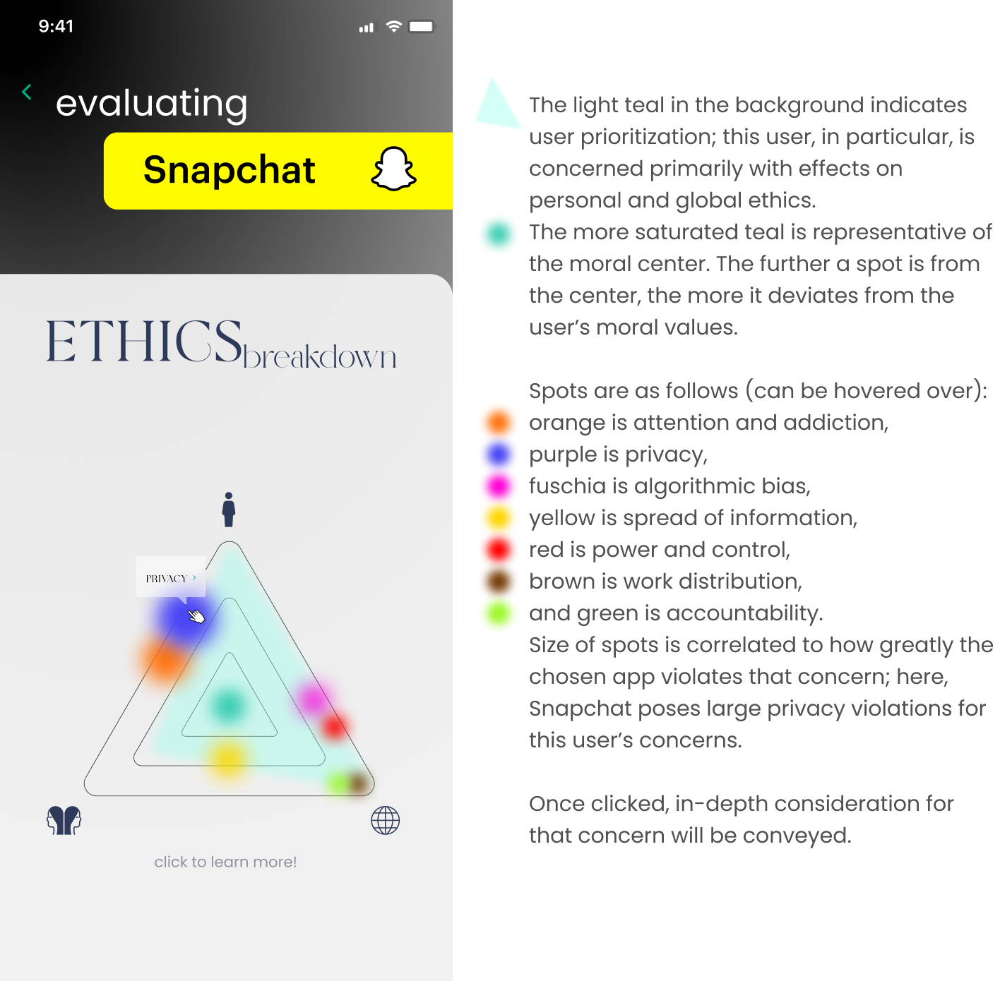

Introduction
This project was the final undertaking of the course PHIL 0401: Ethics in Digital Technology, taught by Professor Julia Netter at Brown University. The course touches on how digital technology has seeped into almost every domain of our lives, shaping our choices, opportunities, and interactions in both the private and public sphere, and challenges students on ethical and normative political questions that examine the role of values such as freedom, autonomy, equality, and privacy in the digital sphere.
Prompt
The prompt for this project was essentially to develop a framework for helping others to reflect and make informed decisions about which digital technologies they want to use, effectively guiding them through the a process of reflection on whether they should use a specific product (app, device, online or other technologically-driven service).
Write-up
I chose to create a digital platform that evaluates other digital platforms - ironic, but this ethical question in itself is discussed in the paper, which you can read below!
Mock-up
Interested in Ethics?
Take a look at my other evaluations!
Is algorithmic justice an unattainable aim in practice? What does that question mean for the moral responsibilities of computer scientists and others who build these systems?
In the context of a project that uses location to track infection rates of particular diseases,
to which extent do you agree or disagree with the statement:
"There is no entitlement to privacy in an increasingly connected world."